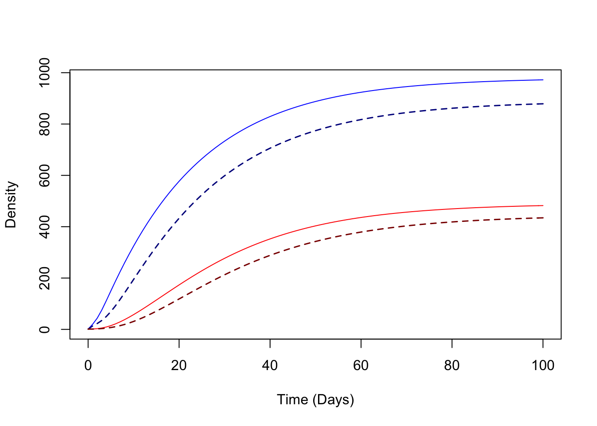

1.2 Solving the Ross-Macdonald Model
It’s not much work to write the software that solves these equations. These are delay differential equations, and we use the software package deSolve.
We will need to specify:
The initial values of \(M\), \(Y\), \(Z\), and \(X\)
A function \(\Lambda(t)\)
Parameter values \(g\), \(f\), \(q\), \(c\), \(\tau\), \(b\), \(H\), and \(r\)
But the first step is to write down the equations to compute the derivatives:
dAronMay = function(t, y, params){with(params,{
if(t<=tau) ylag<-y0 else ylag <- lagvalue(t-tau)
M = y[1]; Y=y[2]; Z=y[3]; X=y[4]
M_tau = ylag[1]; Y_tau = ylag[2]
kappa = c*X/H; kappa_tau = c*ylag[4]/H
h = b*f*q*Z/H
dM = m*H*Lambda(t) - g*M
dY = f*q*kappa*(M-Y) -g*Y
dZ = f*q*kappa_tau*(M_tau-Y_tau)*exp(-g*tau) -g*Z
dX = h*(H-X)-r*X
list(c(dM, dY, dZ, dX))
})} INITIAL VALUES (defaults)
\(M(0)=60\)
\(Y(0)=0\)
\(Z(0)=0\)
\(X(0)=1\)
y0= c(M=60, Y=0, Z=0, X=1)PARAMETER VALUES (defaults)
The model has already provided some default values:
\(g=1/12\): mosquitoes live \(12\) days, on average
\(f=1/2.5\): mosquitoes feed every 2.5 days, on average
\(q=0.95\): mosquitoes feed on humans 95% of the time
\(c=0.15\): about 15% of bites on infectious humans infect a mosquito
\(b=0.55\): about 55% of bites by infective mosquitoes cause an infection
\(r=1/200\): human infections last about \(200\) days, on average
\(H=1000\): we’re simulating transmission in a population of a thousand humans
\(\tau=10\): the extrinsic incubation period is about 10 days
For emergence, we let \[\Lambda(t) = m H \left(1 + \sin \left(\frac{2\pi t}{365}\right)\right)\]
The parameter \(m\) in the function above has been set to \(1\) by default.
params = list(
Lambda = function(t){(1 + sin(2*pi*t/365))},
H=1000,
m=.05,
f=0.3,
q=0.95,
g=1/12,
tau=10,
c=0.15,
b=0.55,
r=1/200,
y0=y0
)
tt = seq(0,5*365, by=5) SOLVING
require(deSolve)## Loading required package: deSolve## Warning: package 'deSolve' was built under R version 4.1.2yout <- data.frame(dede(y=y0, times=tt, func=dAronMay, parms=params)) par(mfrow = c(2,1))
plot(yout$time/365, yout$M, type = "l", col = "blue", xlab = "Time (in Years)", ylab = "Mosquito Density", main = "Mosquitoes")
lines(yout$time/365, yout$Y, col = "purple")
lines(yout$time/365, yout$Z, col = "red")
plot(yout$time/365, yout$X, ylim = c(0,1000), type = "l", col = "blue", xlab = "Time (in Years)", ylab = "# Infected Humans", main = "Humans")